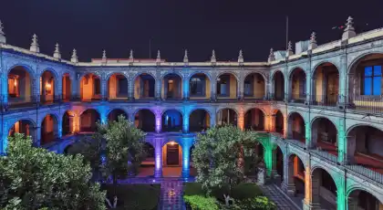
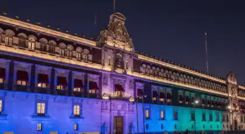
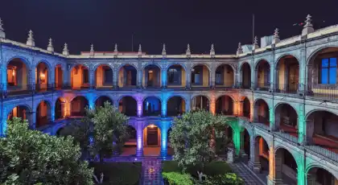
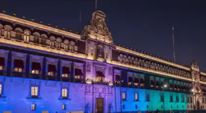

RENTA DE
LUCES ARQUITECTÓNICAS
Iluminación arquitectónica profesional PAR LED que transforma fachadas, jardines y estructuras en obras de arte luminosas para eventos en CDMX y Estado de México
¿Buscas transformar la arquitectura de tu venue en un lienzo de colores vibrantes que impacte a todos tus invitados? La renta de luces arquitectónicas PAR LED de RESOIL es la solución profesional que convierte muros, fachadas y jardines en escenarios visuales extraordinarios. Eliminamos el riesgo de iluminación plana y aburrida, ofreciendo equipos RGBW de última generación con millones de combinaciones de colores que crean atmósferas únicas e irrepetibles en CDMX y Estado de México.
Nuestros reflectores PAR LED profesionales de 18W a 54W con tecnología RGBW + Ámbar permiten bañar fachadas completas, iluminar jardines con degradados de color y crear efectos dinámicos sincronizados con música mediante control DMX-512. Cada instalación de RESOIL está diseñada por lighting designers certificados que calculan ángulos de proyección, intensidad y paletas de color específicas para la arquitectura de tu evento. Con nuestras luces arquitectónicas profesionales, cada muro se convierte en una declaración visual que define el estilo y elegancia de tu celebración.
Galería de Instalaciones
Instalaciones profesionales de iluminación arquitectónica que han transformado eventos en CDMX y Estado de México
 



Estas instalaciones representan algunos de los proyectos más destacados de iluminación arquitectónica en CDMX y Estado de México. Cada diseño lumínico refleja nuestro compromiso con la excelencia técnica y la creatividad visual que caracteriza a RESOIL en la industria de eventos premium.
Por Qué la Renta de Luces Arquitectónicas PAR LED Es la Decisión Correcta para Su Evento
En la industria de eventos de alto nivel, la diferencia entre un espacio ordinario y una experiencia visual memorable está en el diseño lumínico arquitectónico. Las luces arquitectónicas PAR LED no son solo decoración: son la herramienta estratégica que define la identidad visual de su evento y multiplica el impacto emocional en sus invitados. En RESOIL, entendemos que cada venue tiene una arquitectura única que merece ser destacada con iluminación profesional que transforme muros estáticos en elementos dinámicos de diseño.
¿Por qué los wedding planners más exigentes y los productores de eventos corporativos premium en CDMX y Estado de México confían en RESOIL? Porque ofrecemos más que renta de equipos: entregamos diseño lumínico especializado calculado por lighting designers certificados que dominan teoría del color, arquitectura espacial y psicología de la iluminación. Nuestro equipo técnico maneja la complejidad completa del proyecto, desde el análisis arquitectónico del venue hasta la programación DMX sincronizada con momentos clave del evento, permitiéndole enfocarse en la producción general mientras nosotros garantizamos que cada fachada, jardín y estructura cuente la historia visual correcta.
Aplicaciones Estratégicas: Dónde las Luces Arquitectónicas Transforman Espacios
Eventos Donde Nuestras Luces Arquitectónicas Crean Magia Visual
Bodas de Lujo en Haciendas y Jardines
Transforme fachadas coloniales, muros de cantera y jardines en escenarios románticos con baños de luz en tonos cálidos (dorado, ámbar, rosa suave) que complementan la arquitectura histórica. Perfectas para bodas en haciendas de Cuernavaca, Tepoztlán o Valle de Bravo donde la arquitectura del venue es protagonista. La iluminación arquitectónica realza detalles coloniales, arcos de cantera y vegetación mientras crea degradados de color que evolucionan durante el evento: tonos cálidos para ceremonia, paletas vibrantes para recepción. Ideal para eventos de 150-500 invitados donde la fotografía nocturna es prioridad.
Eventos Corporativos y Lanzamientos de Marca
Proyecte la identidad cromática de marcas corporativas en fachadas de venues premium con precisión de color profesional (pantone matching mediante RGBW). Ideal para lanzamientos de producto en espacios como Museo Soumaya, Centro Citibanamex o hoteles boutique donde se requiere branding visual consistente. La tecnología PAR LED permite replicar colores corporativos exactos y crear efectos dinámicos sincronizados con presentaciones multimedia. Incluye programación de secuencias que responden a momentos clave: entrada de ejecutivos, revelación de producto, brindis final. Perfecto para eventos de 200-2000 asistentes donde imagen de marca es crítica.
Conciertos y Festivales de Música
Cree escenografía lumínica de 360° que complementa el show principal iluminando estructuras del venue, backstage y áreas de público con efectos sincronizados vía DMX con la consola principal del concierto. Las luces arquitectónicas PAR LED bañan muros laterales, torres de sonido y estructuras metálicas generando atmósfera envolvente que multiplica el impacto visual del escenario. Programación beat-detection permite que los reflectores arquitectónicos "bailen" al ritmo de la música, creando experiencia inmersiva para 1,000-50,000 asistentes. Esencial en festivales multi-escenario donde se requiere identidad visual unificada entre áreas.
XV Años y Celebraciones Temáticas
Personalice completamente el ambiente cromático del evento adaptando la iluminación arquitectónica al tema específico: tonos pastel para eventos vintage, colores neón para fiestas modernas, paletas monocromáticas para celebraciones elegantes. Los PAR LED RGBW permiten cambiar completamente la atmósfera entre momentos del evento: azul-lavanda para vals, rosa-magenta para fiesta, blanco-dorado para pastel. Perfectos para jardines, salones de eventos y terrazas de 100-300 personas donde se busca máxima personalización visual sin modificar decoración física. Incluye transiciones suaves entre paletas de color programadas según timeline del evento.
Producciones Audiovisuales y Sesiones Fotográficas
Cree ambientes controlados para producciones comerciales, videoclips musicales y editoriales de moda con control total sobre temperatura de color, intensidad y dirección de luz arquitectónica. Los PAR LED RGBW ofrecen CRI 90+ (índice de reproducción cromática) que garantiza colores fieles en cámara, regulación DMX 0-100% para ajustes precisos de exposición y opciones de luz dura o suave según lente utilizado (10° spot / 40° flood). Ideal para sets que requieren iluminación de fondos arquitectónicos, muros texturizados o creación de ambientes específicos sin necesidad de construcción de escenografía. Usado por agencias de publicidad, casas productoras y fotógrafos editoriales para campañas premium.
Galas Benéficas y Eventos Institucionales
Genere atmósferas de elegancia y sofisticación en eventos de recaudación de fondos, premiaciones y ceremonias institucionales iluminando arquitectura de museos, centros culturales y salones históricos con paletas cromáticas que refuerzan la solemnidad del evento. La iluminación arquitectónica permite destacar elementos patrimoniales (columnas, cúpulas, vitrales) mientras mantiene niveles de iluminación funcional para cena, subasta y programa de actividades. Programación por zonas permite iluminar diferencialmente áreas de coctel, cena y escenario. Perfecto para eventos de 200-1000 asistentes en venues como Palacio de Minería, Ex Convento de San Hipólito o Museo Franz Mayer donde arquitectura histórica es parte esencial de la experiencia.
La versatilidad técnica de nuestras luces arquitectónicas PAR LED las convierte en la herramienta esencial para cualquier evento que requiera transformación visual de espacios arquitectónicos. Desde bodas íntimas en jardines privados hasta festivales masivos en recintos industriales, nuestros equipos se adaptan a cualquier escala de producción con la confiabilidad que exige la industria de eventos profesionales.
Paquetes y Especificaciones Técnicas: Soluciones para Cada Tipo de Venue
RESOIL ofrece 5 paquetes escalables de renta de iluminación arquitectónica, desde eventos íntimos hasta producciones masivas. Cada paquete incluye diseño de layout lumínico, instalación profesional certificada, programación DMX personalizada y operación técnica durante el evento. Las especificaciones técnicas se traducen directamente en resultados visuales medibles: cobertura uniforme de color, degradados suaves entre tonalidades y efectos dinámicos sincronizados.
| Paquete | Reflectores PAR | Potencia Total | Cobertura | Ideal Para | Incluye |
|---|---|---|---|---|---|
| Básico | 12-20 unidades | 216W - 360W | Hasta 80m² fachada | Eventos íntimos, patios pequeños, cenas privadas hasta 100 personas | Diseño de layout básico + instalación express |
| Esencial | 20-40 unidades | 360W - 720W | Hasta 150m² fachada | Bodas medianas, eventos corporativos, jardines de haciendas 100-250 personas | Paleta de colores personalizada + control manual |
| Profesional | 40-60 unidades | 720W - 1080W | Hasta 300m² fachada | Bodas grandes, eventos premium, conciertos medianos 250-500 personas | Programación DMX básica + técnico en sitio |
| Premium | 60-100 unidades | 1080W - 1800W | Hasta 500m² fachada | Eventos de lujo, conciertos grandes, lanzamientos de marca 500-2000 personas | Programación DMX compleja + lighting designer + consola dedicada |
| Enterprise | 100+ unidades | 1800W+ | 500m²+ fachada | Festivales masivos, conciertos arena, producciones TV 2000+ personas | Diseño lumínico integral + equipo técnico completo + backup de emergencia |
Especificaciones Técnicas Universales (Todos los Paquetes)
- ✓ Tipo de Equipo: PAR LED 64 y PAR LED 56 profesionales (18W / 36W / 54W según paquete)
- ✓ Tecnología de Color: RGBW + Ámbar (Rojo, Verde, Azul, Blanco cálido, Ámbar) con mezcla de 16.7 millones de colores
- ✓ Índice de Reproducción Cromática: CRI 90+ (colores fieles y vibrantes en fotografía y video)
- ✓ Ángulos de Proyección: 10° (spot concentrado), 25° (medio), 40° (flood amplio) - seleccionables según superficie
- ✓ Control de Intensidad: Regulación DMX-512 de 0-100% con curvas de dimmer profesionales (linear, square, inverse square)
- ✓ Temperatura de Color: 2700K-6500K ajustable (luz cálida a luz fría según atmósfera deseada)
- ✓ Consumo Energético: 18-54W por reflector (ahorro del 85% vs. PAR incandescentes tradicionales de 500W)
- ✓ Protección Climática: Certificación IP65 en modelos outdoor (resistencia total a lluvia y polvo)
- ✓ Vida Útil: 50,000 horas de operación continua (10 años de uso intensivo sin degradación de color)
- ✓ Control DMX: 8 canales por reflector (control individual de R, G, B, W, Amber, dimmer, strobe, macros)
- ✓ Instalación: Servicio integral incluido (análisis arquitectónico, diseño de layout, montaje certificado, programación y operación)
- ✓ Cobertura Geográfica: CDMX, Estado de México y zona metropolitana (servicios nacionales bajo cotización especial)
Solicita tu Cotización de Iluminación Arquitectónica
Completa el formulario con los detalles arquitectónicos de tu venue y recibe una propuesta lumínica personalizada con diseño de layout incluido. Nuestro equipo de lighting designers te responderá en menos de 4 horas con visualización 3D del proyecto.
Preguntas Frecuentes sobre Renta de Luces Arquitectónicas
Resuelve todas tus dudas técnicas y operativas sobre nuestro servicio especializado en iluminación arquitectónica PAR LED para eventos
Definición técnica: Las luces arquitectónicas PAR LED son reflectores profesionales de formato parabólico (Parabolic Aluminized Reflector) que utilizan diodos emisores de luz (LED) en configuración RGBW o RGBA para generar cualquier color del espectro visible mediante mezcla aditiva.
Principio de funcionamiento: Cada reflector PAR contiene chips LED independientes de Rojo (Red), Verde (Green), Azul (Blue), Blanco (White) y opcionalmente Ámbar (Amber). Al controlar la intensidad individual de cada color vía señal DMX-512 (0-255 niveles por canal), se pueden crear 16.7 millones de combinaciones cromáticas. El reflector parabólico concentra la luz en ángulos específicos (10°, 25° o 40°) según la lente instalada.
Tecnología RESOIL: Utilizamos equipos PAR 64 (diámetro 8") y PAR 56 (diámetro 7") con LEDs de alta eficiencia de 18W a 54W que generan output lumínico equivalente a PAR incandescentes de 500W-1000W pero con 85% menos consumo eléctrico y temperatura de operación 90% inferior (no queman vegetación ni dañan superficies sensibles).
Aplicación práctica: Al instalar múltiples reflectores PAR LED a distancias calculadas (3-8 metros de la superficie según potencia), se logra baño de color uniforme en fachadas, muros y jardines. La programación DMX permite efectos como crossfade (transición suave entre colores), chase (secuencias en movimiento), strobe (destellos) y sincronización con audio vía beat detection.
Cálculo por superficie de fachada:
Fachadas pequeñas (hasta 80m²): 12-20 reflectores PAR LED 18W. Ideal para patios residenciales, muros únicos de jardines privados, áreas de coctel en terrazas boutique.
Fachadas medianas (80-200m²): 20-40 reflectores PAR LED 36W. Perfecto para haciendas medianas, 2-3 muros de salones de eventos, jardines con vegetación perimetral, fachadas coloniales de un nivel.
Fachadas grandes (200-400m²): 40-60 reflectores PAR LED 54W. Necesario para haciendas extensas, fachadas de dos niveles, jardines con múltiples áreas, estructuras arquitectónicas complejas con columnas y arcos.
Venues masivos (400m²+): 60-100+ reflectores PAR LED 54W. Requerido para recintos industriales, museos, centros de convenciones, estadios cubiertos, festivales con múltiples estructuras.
Factores que afectan el cálculo: Altura de muros (muros >6 metros requieren reflectores de mayor potencia y menor ángulo), textura de superficie (cantera/concreto rugoso absorbe más luz que superficies lisas pintadas), vegetación (árboles y plantas requieren hasta 30% más reflectores para cobertura uniforme), color deseado (tonos pasteles requieren menos intensidad que colores saturados).
Servicio incluido: RESOIL ofrece visita técnica gratuita con medición láser de superficies, análisis arquitectónico del venue y diseño de layout 3D que muestra posicionamiento exacto de reflectores y preview de resultados lumínicos antes del evento.
LED RGB (3 colores): Mezcla únicamente Rojo, Verde y Azul. Limitación: para crear blanco debe mezclar los 3 colores al 100%, generando blanco azulado poco natural (6000K-7000K) que no replica luz de día ni luz cálida de tungsteno. Los tonos pastel (rosa claro, lavanda, durazno) resultan desaturados y poco vibrantes.
LED RGBW (4 colores - RESOIL): Agrega chip de LED blanco dedicado (2700K-3200K) que permite:
1. Blancos naturales: Luz blanca cálida pura sin tinte azulado, ideal para iluminación funcional durante cena o momentos que requieren luz neutra.
2. Tonos pastel vibrantes: Al mezclar blanco dedicado con colores primarios, se logran rosas, lavandas y duraznos intensos imposibles con RGB puro.
3. CRI superior: RGBW alcanza CRI 90+ (índice de reproducción cromática) vs. CRI 70-75 de RGB, crítico para fotografía y video profesional donde colores deben verse fieles.
4. Mayor eficiencia: Blancos consumen 25% menos energía usando LED blanco dedicado vs. mezcla RGB al 100%.
LED RGBA (5 colores - Premium): Nuestros paquetes Premium y Enterprise incluyen reflectores con chip Ámbar adicional que perfecciona tonos cálidos (dorados, naranjas, ámbar profundo) esenciales para eventos con temática vintage, otoñal o iluminación que replica atardeceres.
Recomendación RESOIL: RGBW es estándar mínimo profesional. RGB puro solo es aceptable para efectos escénicos donde no se requieren blancos ni pasteles precisos.
Certificación IP65 (Equipos Outdoor): Nuestros reflectores PAR LED para exteriores cuentan con grado de protección IP65 que garantiza:
Protección contra polvo (6): Sellado hermético total que impide entrada de partículas sólidas. Operan sin degradación en ambientes con polvo, tierra o arena.
Protección contra agua (5): Resistencia a chorros de agua desde cualquier dirección. Soportan lluvia intensa, rociadores de jardín y condensación extrema sin daño a componentes electrónicos.
Componentes sellados: Lentes de policarbonato con juntas de silicona industrial, conectores XLR con capuchones impermeables, cableado de uso rudo calibre 12 AWG con chaqueta UV-resistant.
Temperatura operativa: -10°C a +45°C (funcionan en heladas ligeras y calor intenso de verano sin throttling térmico).
Protección adicional RESOIL: Para eventos bajo lluvia intensa, ofrecemos carpas de protección transparente que mantienen reflectores secos mientras permiten proyección de luz sin obstrucción. Sistemas de drenaje rápido en bases evitan acumulación de agua.
Experiencia comprobada: Hemos operado exitosamente en lluvia torrencial (+50mm/h), vientos de hasta 70 km/h, humedad 95%+ y temperaturas desde 8°C hasta 42°C sin fallas técnicas. Nuestro récord: 0 fallas por clima en 500+ eventos exteriores en 5 años.
Equipos Indoor (IP20): Para eventos en salones cerrados, utilizamos reflectores IP20 más ligeros y compactos que no requieren sellado pesado pero mantienen misma calidad de color y control.
Respuesta corta: Sí, con limitaciones técnicas que explicamos transparentemente.
Proceso de color matching RESOIL:
1. Conversión Pantone a RGB: Convertimos el código Pantone corporativo (ej: Pantone 2945C azul corporativo) a valores RGB mediante tabla de conversión profesional. Importante: Pantone es sistema sustractivo (tinta en papel), RGB/LED es sistema aditivo (luz), por lo que hay aproximación inevitable.
2. Calibración en sitio: Durante visita técnica, proyectamos el color en la superficie real del venue (cantera, concreto, pintura blanca, etc.) porque el color final percibido resulta de la mezcla entre luz LED y color de la superficie. Ajustamos valores RGB hasta lograr match visual aprobado por cliente.
3. Compensación de temperatura de color: Superficie blanca cálida (crema, beige) requiere agregar más azul para compensar. Superficie fría (gris, concreto) requiere más rojo/ámbar. Nuestros lighting designers compensan estas variables matemáticamente.
4. Creación de paleta multi-color: Para eventos con varios colores corporativos, programamos "escenas" en consola DMX donde un botón activa instantáneamente la paleta completa en todos los reflectores simultáneamente.
Colores difíciles de replicar: Amarillos/naranjas muy saturados (requieren RGBA), tonos neón brillantes (necesitan reflectores especializados UV), metálicos (imposibles con luz, solo con superficies reflectantes).
Colores perfectos con LED: Azules corporativos, rojos intensos, verdes esmeralda, violetas, rosas, blancos cálidos/fríos, degradados entre cualquier tono.
Garantía de satisfacción: Incluimos prueba de color 48 horas antes del evento donde cliente aprueba paleta final. Si el color no cumple expectativas, ajustamos sin costo hasta lograr aprobación.
Consumo por reflector individual:
PAR LED 18W: Consumo real 20W (incluyendo driver electrónico). Requiere 0.09A en 220V.
PAR LED 36W: Consumo real 40W. Requiere 0.18A en 220V.
PAR LED 54W: Consumo real 60W. Requiere 0.27A en 220V.
Cálculo para paquetes completos:
Paquete Básico (20 reflectores 18W): 400W total = 1.8A. Funciona con contacto doméstico estándar 15A.
Paquete Esencial (40 reflectores 36W): 1,600W total = 7.3A. Requiere circuito dedicado 20A o 2 contactos separados.
Paquete Profesional (60 reflectores 54W): 3,600W total = 16.4A. Requiere acometida trifásica 30A o generador de respaldo.
Paquete Premium (100 reflectores 54W): 6,000W total = 27.3A. Necesita distribución eléctrica profesional con múltiples circuitos balanceados.
Comparación con tecnología anterior: PAR LED 54W reemplaza PAR incandescente de 500W generando mismo output lumínico pero consumiendo 92% menos energía. Un paquete de 60 reflectores LED (3.6 kW) equivale lumínicamente a 60 PAR incandescentes (30 kW) - ahorro de 26.4 kW.
Solución para venues sin capacidad eléctrica: Ofrecemos generadores silenciosos Honda EU7000is (7 kW, 60dB a 7m) que soportan hasta Paquete Profesional completo con autonomía de 10 horas. Para paquetes mayores, coordinamos generadores trifásicos de 15-30 kW con instalación de planta de distribución temporal.
Servicio incluido: Evaluación eléctrica del venue durante visita técnica, cálculo de carga total, coordinación con electricista del recinto y provisión de distribuidores eléctricos certificados (dimmers, breakouts) para operación segura.
Sí, mediante protocolo DMX-512 profesional: Todos nuestros reflectores PAR LED cuentan con control DMX de 8 canales que permite programación de efectos complejos vía consola de iluminación.
Efectos disponibles - Paquetes Profesional y superiores:
1. Color chase (persecución): Secuencia de colores que "viajan" de reflector en reflector creando efecto de movimiento. Velocidad ajustable 0.1-10 segundos por ciclo.
2. Crossfade (transición suave): Cambio gradual entre paletas de color en tiempos programables (1-60 segundos). Ideal para evolución de atmósfera durante evento (cálido→frío, día→noche).
3. Strobe (destello): Destellos rítmicos sincronizados entre reflectores a 1-20 Hz. Usado en conciertos para acentuar drops musicales.
4. Random color: Cambios aleatorios de color en cada reflector creando efecto caleidoscópico. Configurable por velocidad y paleta cromática permitida.
5. Sincronización con audio: Beat detection que analiza frecuencias graves (kick drum) y activa cambios de color/intensidad en tiempo real con la música. Requiere interfaz audio-DMX (incluida en Premium/Enterprise).
6. Programación por zonas: Control independiente de grupos de reflectores (fachada principal, jardín lateral, área de cena) permitiendo efectos diferentes simultáneos.
7. Timeline programming: Secuencias programadas por hora específica del evento (ej: 19:00 tonos cálidos ceremonia, 21:00 colores vibrantes fiesta, 23:00 azules relajados cierre).
Consolas utilizadas: Grand MA2 onPC (eventos grandes), Avolites Titan Mobile (medianos), software Freestyler DMX (básicos). Todas permiten guardar shows completos pre-programados y ejecutar cambios mediante un botón.
Incluido en servicio: Paquetes Profesional+ incluyen técnico operador de DMX en sitio durante todo el evento que ejecuta programación según timeline acordado y realiza ajustes en tiempo real si se requieren cambios de última hora.
Temporada alta (noviembre-enero, mayo-julio): Mínimo 6-8 semanas de anticipación. Estas temporadas concentran bodas, eventos corporativos de fin de año y graduaciones, generando máxima demanda de equipos profesionales de iluminación.
Temporada media (febrero-abril, agosto-octubre): 4-6 semanas recomendadas. Tiempo suficiente para visita técnica al venue (2 semanas antes), diseño de layout lumínico personalizado y coordinación logística con otros proveedores del evento.
Eventos de última hora: Consultamos disponibilidad hasta 1 semana antes. Ofrecemos servicio express con diseño de layout acelerado (48 horas) y coordinación intensiva. Sujeto a disponibilidad de inventario y aplicable recargo express del 20%.
Eventos grandes (60+ reflectores): 8-12 semanas anticipación para garantizar inventario completo, especialmente si se requieren modelos específicos (RGBA, IP65 outdoor, ángulos especiales). Incluye tiempo para ensayo técnico completo 72 horas antes del evento.
Producciones complejas (100+ reflectores, múltiples zonas DMX): 12-16 semanas para planificación integral que incluye renders 3D fotorrealistas del diseño lumínico, coordinación con arquitecto/diseñador del evento, pruebas de color en sitio y programación DMX compleja.
Beneficios de reserva anticipada: Prioridad en selección de equipos (puedes elegir modelos específicos), descuento del 10% en reservas +12 semanas, diseño lumínico más elaborado con múltiples propuestas, coordinación relajada sin prisas.
Política de reservación: Cotización válida por 30 días. Reserva confirmada requiere 50% anticipo, saldo restante 7 días antes del evento. Incluimos 1 cambio de fecha sin penalización si notificas con 30+ días de anticipación.
Visita técnica: Gratuita para paquetes Profesional+ cuando se reserva con 4+ semanas de anticipación. Incluye medición láser del venue, análisis arquitectónico, diseño de layout 2D y estimación eléctrica. Duración: 2-3 horas en sitio.
¿Tu Venue Merece Iluminación Arquitectónica de Nivel Mundial?
Para Wedding Planners y Productores de Eventos Premium: En eventos de alto presupuesto, la arquitectura del venue es parte esencial de la experiencia visual que tus clientes pagan por vivir. Un jardín colonial sin iluminación arquitectónica es una oportunidad perdida de crear el "efecto WOW" que justifica tarifas premium y genera testimoniales orgánicos en redes sociales.
Con RESOIL, no solo rentas reflectores PAR LED: accedes a un equipo de lighting designers certificados que dominan teoría del color, arquitectura espacial y psicología de la iluminación. Transformamos fachadas estáticas en elementos dinámicos que evolucionan durante el evento, creando atmósferas diferenciadas para ceremonia, coctel, cena y fiesta sin modificar un solo elemento de decoración física.
Para Marcas y Agencias de Activación Experiencial: La iluminación arquitectónica ya no es opcional en eventos corporativos de alto perfil: es la herramienta que proyecta literalmente tu identidad de marca en el espacio físico. Cada fachada iluminada con tus colores Pantone exactos es un billboard tridimensional que multiplica el impacto de tu inversión en venue.
Ofrecemos color matching certificado, facturación CFDI con desglose técnico detallado, contratos con cláusulas de rendimiento garantizado y póliza de seguro de responsabilidad civil de 3 millones USD. Nuestro equipo técnico ha iluminado lanzamientos de las marcas más exigentes de México, entregando consistentemente resultados que superan renders y mockups iniciales.
Garantía Total de Satisfacción: Prueba de color en sitio 48h antes del evento • Renders 3D del diseño incluidos • Póliza de seguro 3M USD • Técnico certificado operando durante todo el evento